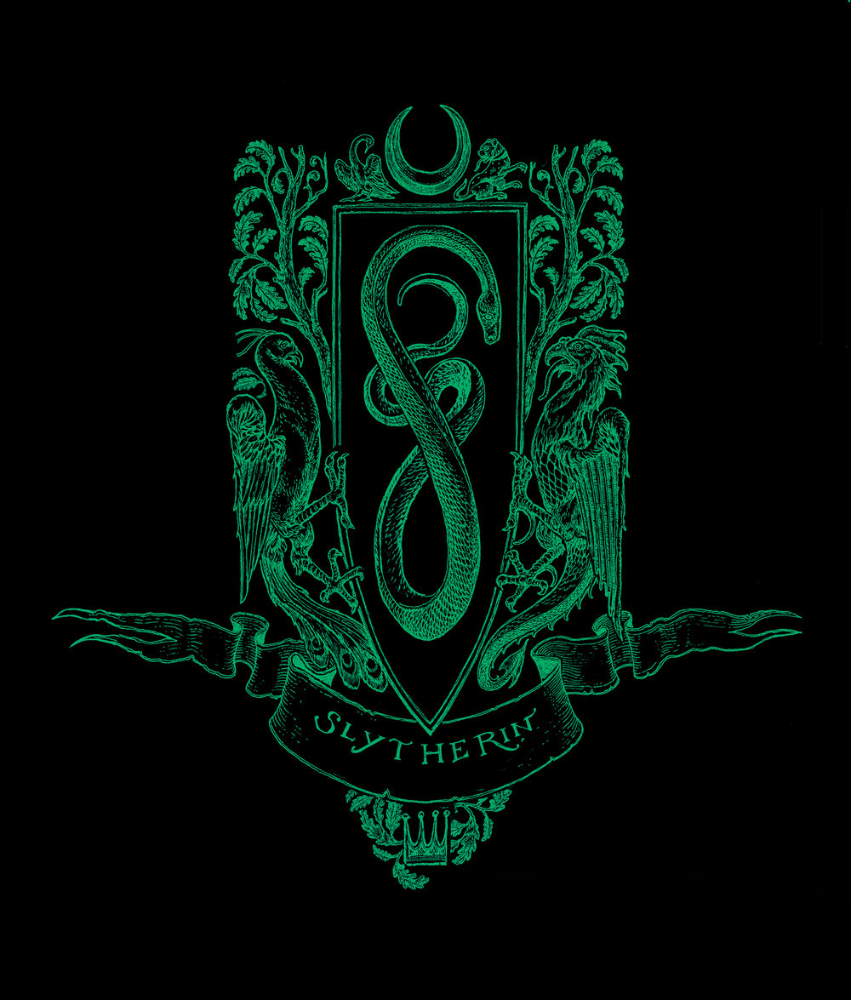
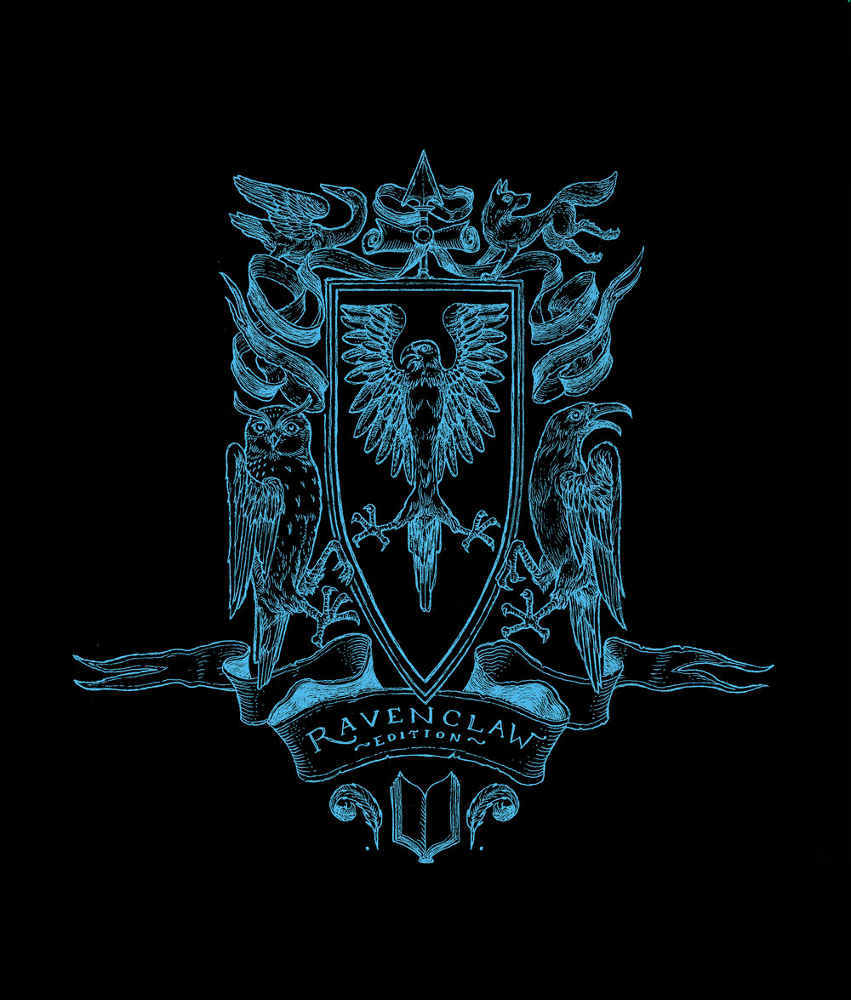
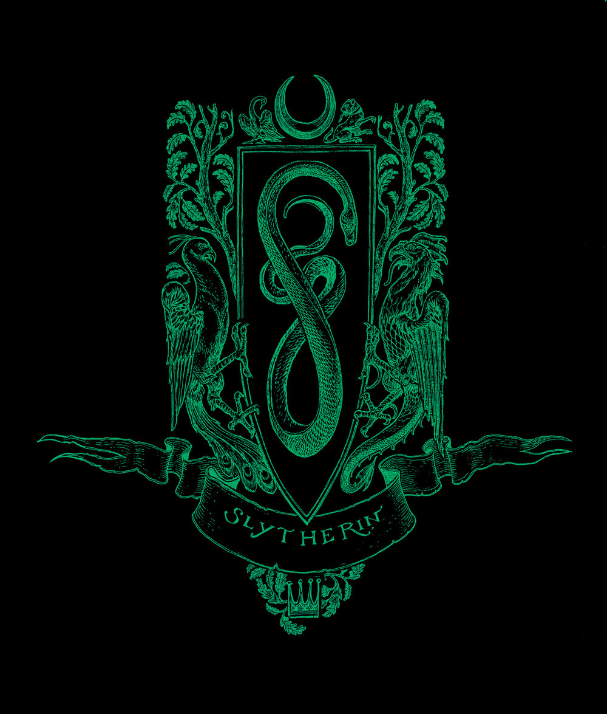
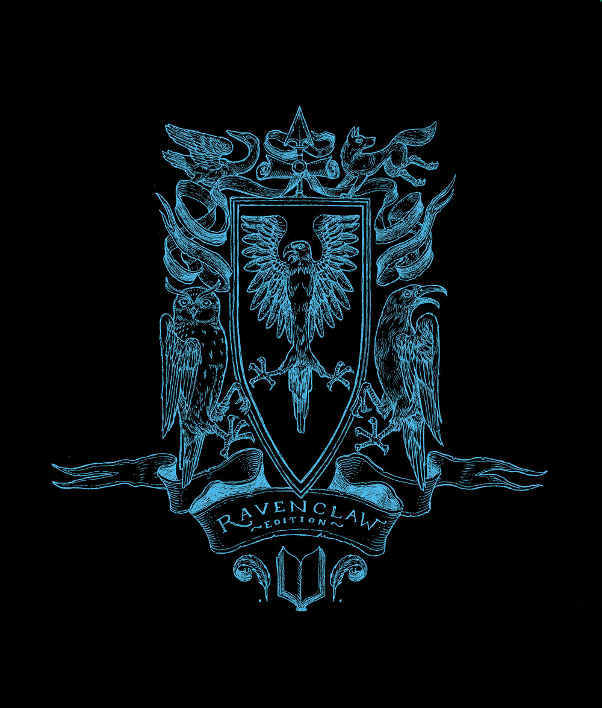

The Monthly "Hogwarts"
● Overview
The Monthly "Hogwarts" is a fan-made newspaper based in Archive of Our Own. It is delivered on a monthly basis to nearly every HP fans's AO3 email boxes. Subscriptions cost $36 per year. It records and reports on the things going on the fanfiction world (albeit not always ina unbiased way).
● History
The Monthly Hogwarts has been produced since 1999. NO.1 1999 Oct. only contained one piece of fanfiction. During the past 30 years, the number of fanfictions demostrates the explosive growth potential and the fanfictions worlds demonstrates vigorous scene.
● News
The Monthly Hogwarts is Recruiting for Writers & Editors
Do you love Harry Potter fan communities? Are you passionate about Harry Potter fanfictions? Are you good at writing and reading? The Monthly Hogwarts is recruiting!
Read more...
April in general
From April 1 to April 30, there are totally 6961 pieces of HP fanfictions updating in AO3.
Among 6961 pieces:
The most clicked story is Dumbledore's Little Pet written by Finnian_Siogthe, it has 385804 hits in total;
The most renown story is If Them's the Rules written by Light MayMarlow, it has 13491 kudos in total;
The longest story is Harry Potter and the Berserker written by deathbearabc123, it has 715192 words, 75 chapters;
Besides,according to general classfictaion, there are
5468 pieces of short fictions (Word count below 20,000)
1193 pisces of medium fictions (Word count between 20,000-100,000)
300
pieces of long fictions (Word count under 100,000).
x